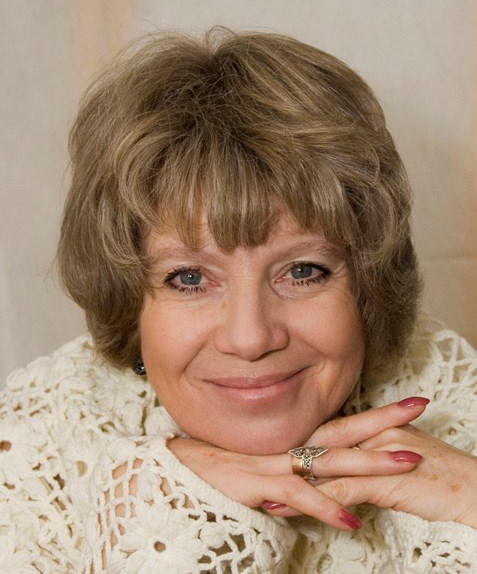

О нас
Руководитель студии - Заслуженная артистка РФ, актриса театра им. А.С. Пушкина Пулина Ирина Исаевна
За годы существования театра менялись руководители, а вместе с ними менялся репертуар студии. С 2015 года руководителем становится заслуженная артистка РФ, актриса театра им. Пушкина И.И. Пулина. С этого момента меняются цели и задачи театра "АванСцена". Мы назвали их "Наш манифест"
В студии работают над основами владения сценической речью, сценическим движением, актерским мастерством. Развитие у студийцев таких качеств как внимание, память, интуиция, умение взаимодействовать с партнером и всей командой, владеть своим телом, работать с текстом пьесы. Всё это необходимо для создания целостного спектакля.
Театральная студия для лиц старше 18 лет, желающих заниматься актерским мастерством, существует в ЦК «Сцена» с 2004 года. В 2016 году студии присвоено звание "Народный театр "АванСцена". В 2018 году театр получил Почетное звание "Московский Городской Творческий коллектив". Коллектив "АванСцена" состоит из абсолютных энтузиастов и любителей театра. Никто из них не заканчивал театральные ВУЗы,актерского образования у них нет. Все они люди разных профессий, разного возраста, но всех их объединяет одно - любовь к сцене!